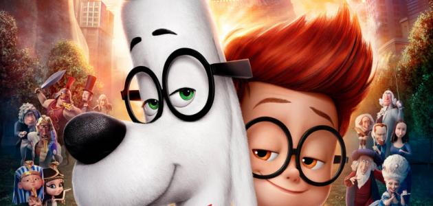

انواع افلام الكرتون
أفلام الكرتون قام مبدأ الرسوم المتحرّكة على تحريك مجموعة من الصور الثابتة بشكل سريع من خلال جهاز خاص، حيث يوهم العين بأنّ هذه الرسومات تتحرّك بشكل متواصل، وقد كانت المرّة الأولى التي عرض فيها أوّل مشروع للرسوم المتحرّكة أمام العلن في فرنسا على يد تشارلز ايميل رينود في العام 1892م حيث كان من خلال جهاز للعرض للشرائح التي تحتوي على الرسومات المرسومة على إطارات، وقد واصلت صناعة الرسوم المتحرّكة تطورها ليصبح بالإمكان أن يتم عرضها ولكن بدون استخدام الإطارات، وكان ذلك في العام 1900م حيث أطلق على الفيلم اسم الرسوم السحرية، وقد صدر أول فيلم كرتوني كامل في الولايات الأمريكية المتحدة على يد ستيوارت بلاكتون، وقد كان يتم رسم الصور بشكل يدوي، وقد تغير مصطلح الرسوم المتحرّكة ليصبح أفلام الكرتون في العام 1910م، وقد انتشرت هذه الأفلام في غالبية المناطق الأوروبية، ومن الجدير بالذكر بأن تم تصميم الرسوم المتحرّكة عن طريق الحاسوب في بداية العام 1995م، وقد كانت نقلة نوعية في مجال هذه الصناعة، حيث كان أول فيلم يتم عرضه باستخدام هذه الآلية هو Toy Store.
هناك العديد من أنواع أفلام الكرتون، والتي سنذكرها في النقاط التالية: أفلام الكرتون الكاملة: وهي عبارة عن الأفلام التقليدية التي يتم عرضها بجودة عالية، حيث أنها تهتم بمراعاة التفاصيل الدقيقة في الرسوم، والحرص على تصميم حركة الشخصيات بانسيابية وحرية، وقد كان هذا الأسلوب الذي تم اعتماده من قبل شركة والت ديزني، ومن الأمثلة على هذه الأفلام فيلم الجميلة والوحش، وعلاء الدين. أفلام الكرتون المحدودة: وهي الأفلام التي لا تهتم بتفاصيل الرسوم أو دقة الحركة، والتي كان الغرض الأساسي منها هو للتعبير عن أمور فنية أو مشاعر معينة بحركات سريعة ولا يشترط فيها التواصل. استخدام تقنية لتحويل الرسوم اليدوية إلى شخصيات حقيقية متحرّكة، أو القيام بتحويل شخصية حقيقية إلى رسمة وتحريكها. استخدام الدمى إما على شكل الأشخاص أو على شكل الحيوانات، والتي يتم تركها للتتفاعل مع المحيط المصمم لها، ولكن تكون ذات حركة محدودة، فبالعادة هي تستطيع أن تتحرك من عند مفاصل معينة. استخدام الصلصال: والتي يتم تصميمها وصناعتها من الصلصال، وتركها للتفاعل مع محيطها، وهي تشبه إلى حد كبير الطريقة المتبعة في النقطة السابقة، وغالباً ما يتم استخدامها للإعلانات أو الرسوم القصيرة. استخدام أفلام الكرتون المصممة عن طريق الحاسوب، والتي تتخذ إما بعدين أو ثلاثة أبعاد. أفلام الكرتون التي تعتمد على تحويل الآلات الميكانيكية إلى رسوم كرتونية. أفلام الكرتون التي يتم فيها استخدام الألوان الزيتية في عملية التلوين.
